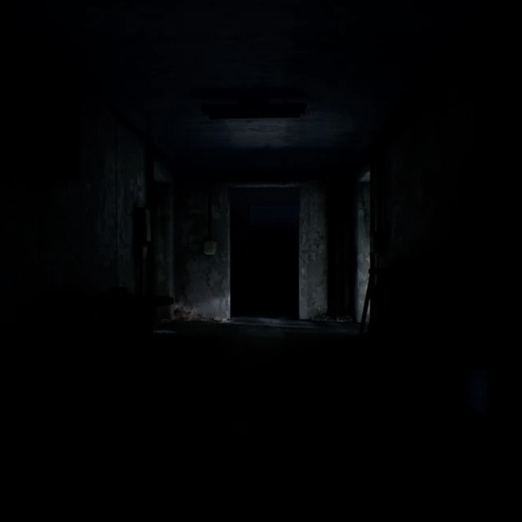

暗闇に包まれた空間。
この空間では未知の物理法則を歪曲する作用が働いており、
通信や感知が不可能である。
知り合いの呼び声、何かが這う音、囁き声や呼吸音などの幻聴が常に発生する。
強い不安感を抱くことは致命的である。
天井は存在せず、壁が無限に上へ続いていると考えられる。
空間は気温が常に16℃近辺に保たれているようだ。
自我を失わないように精神を保つことをお勧めする。
理解度:30%
危険度:4/5